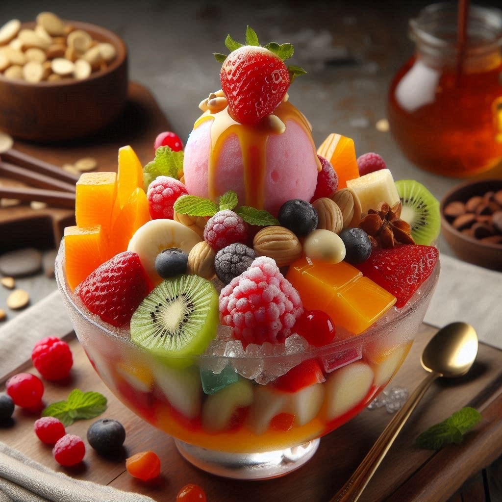
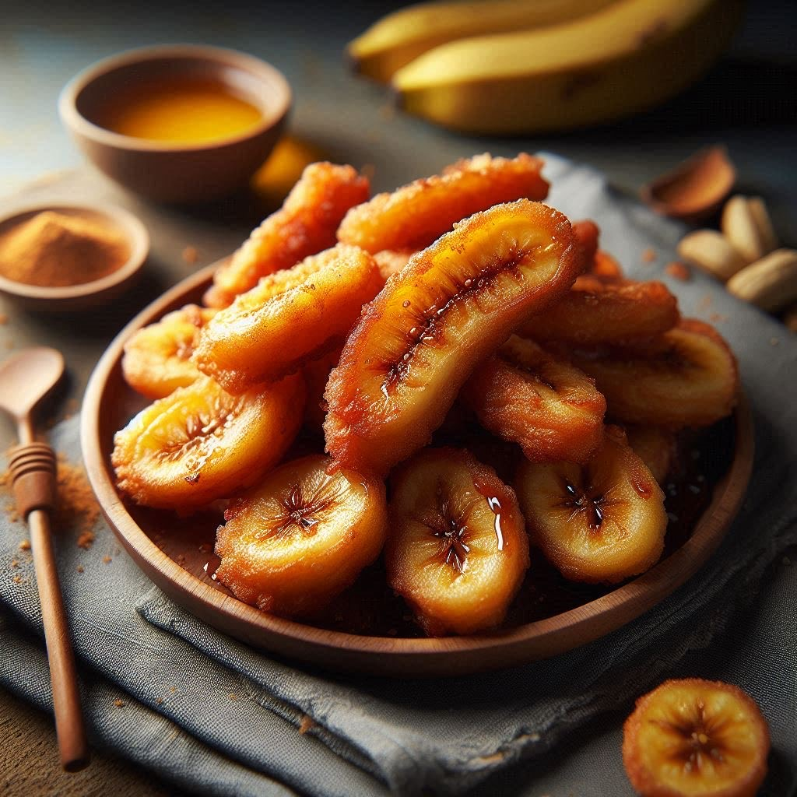
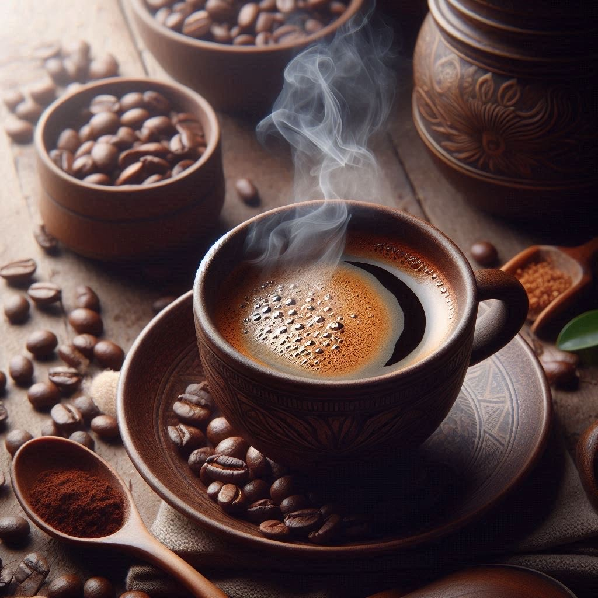
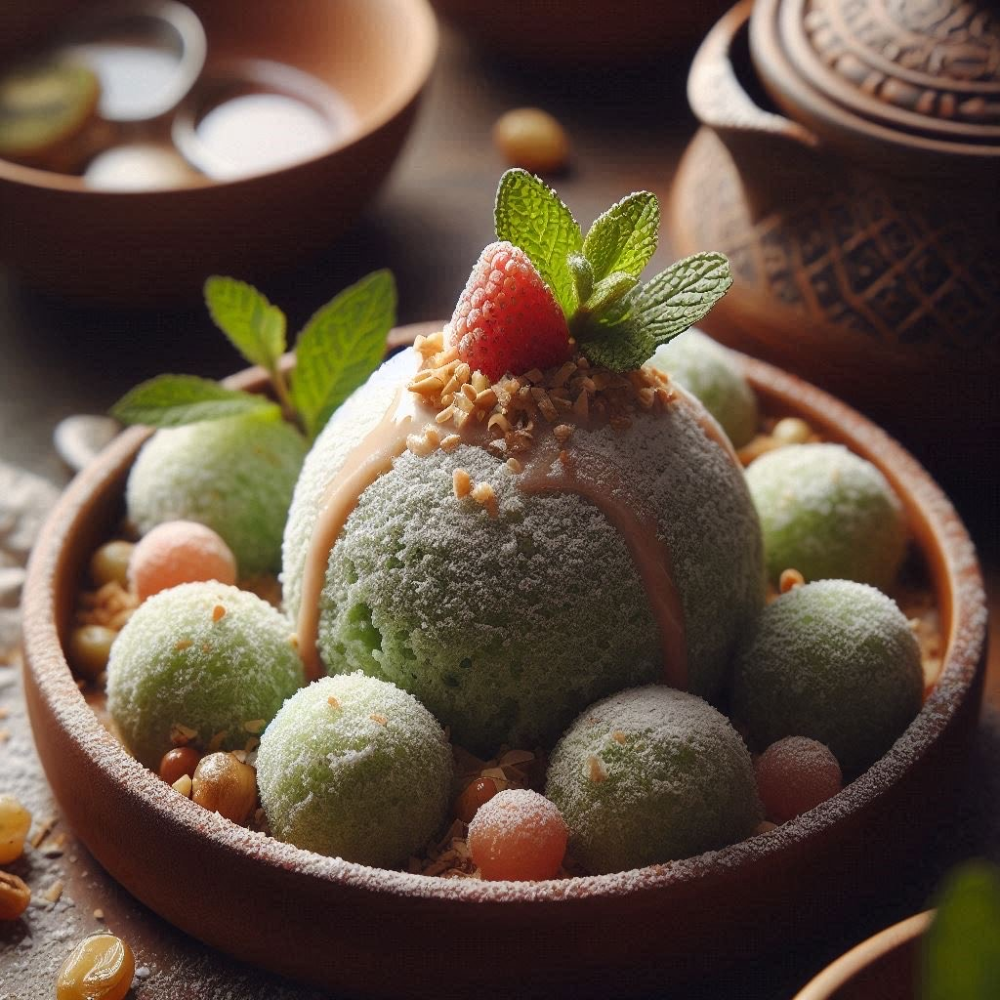
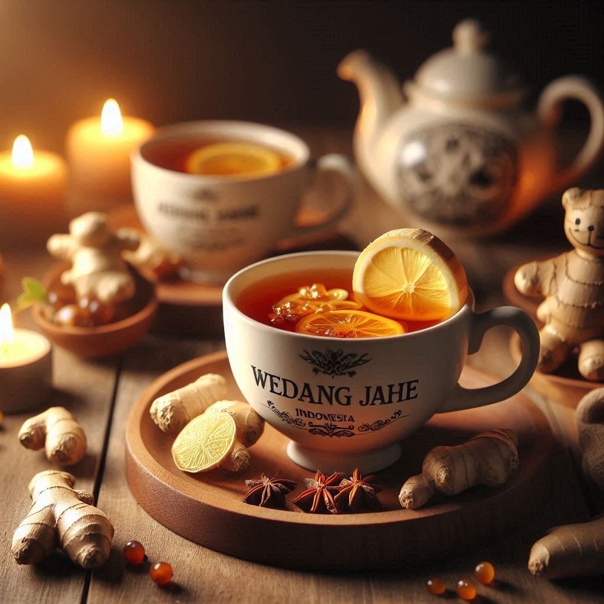
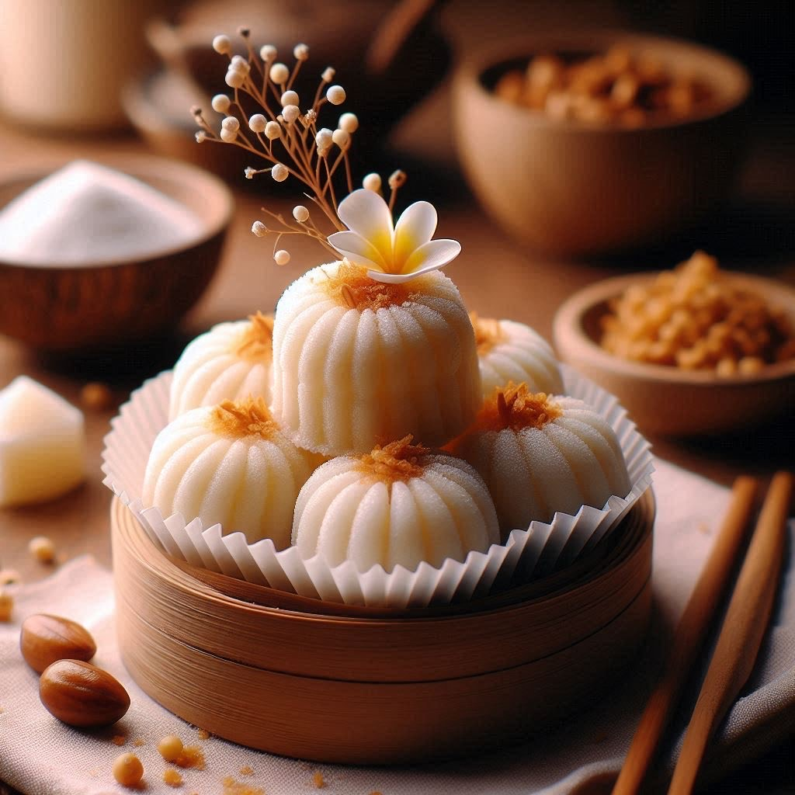
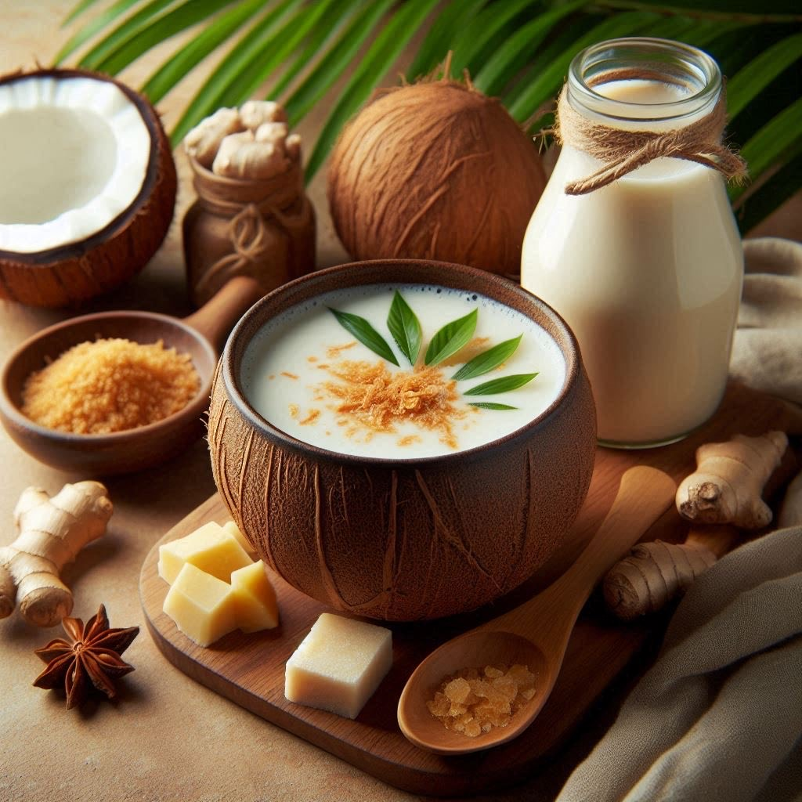
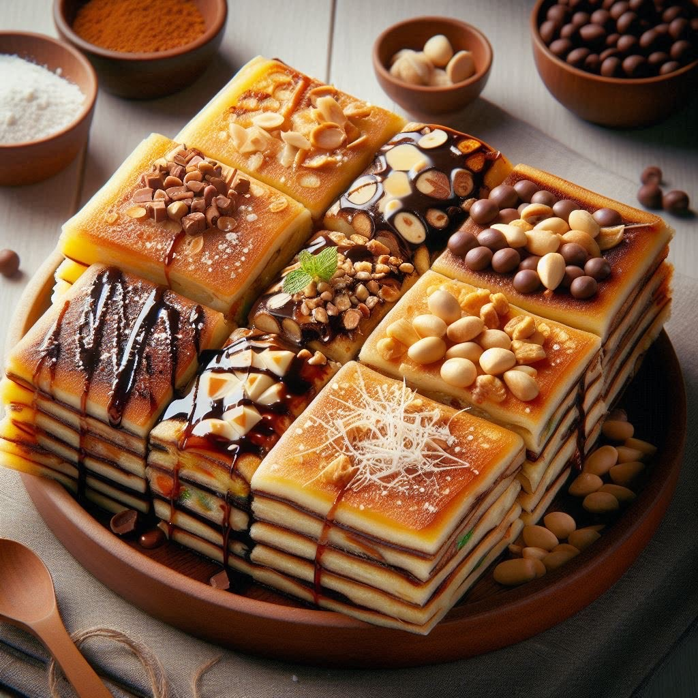

Favorites Menu

Es Campur
Mixed ice dessert with fruits, jelly, and sweet syrup

Pisang Goreng
Fried bananas, crispy on the outside and soft on the inside

Kopi Tubruk
Traditional Indonesian coffee, strong, and unfiltered

Klepon
Sweet rice balls with palm sugar filling, coated in grated coconut

Wedang Jahe
Warm ginger tea - Perfect for a cozy evening

Kue Putu
Steamed rice cakes filled with palm sugar and served with grated coconut

Bajigur
Warm drink made from coconut milk, palm sugar, and a hint of ginger

martabak Manis
Sweet - thick pancake filled with various toppings like chocolate, cheese, and peanuts